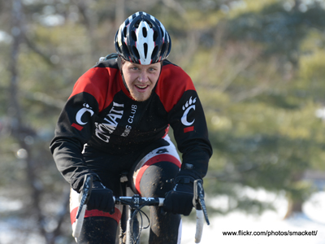
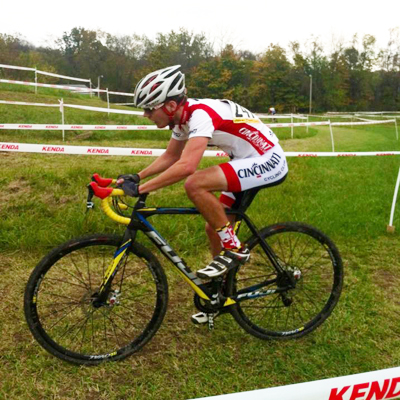
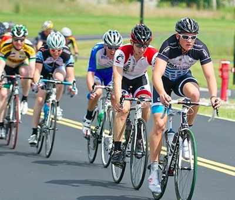
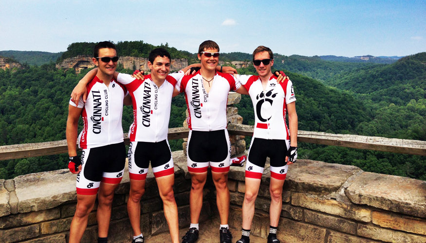
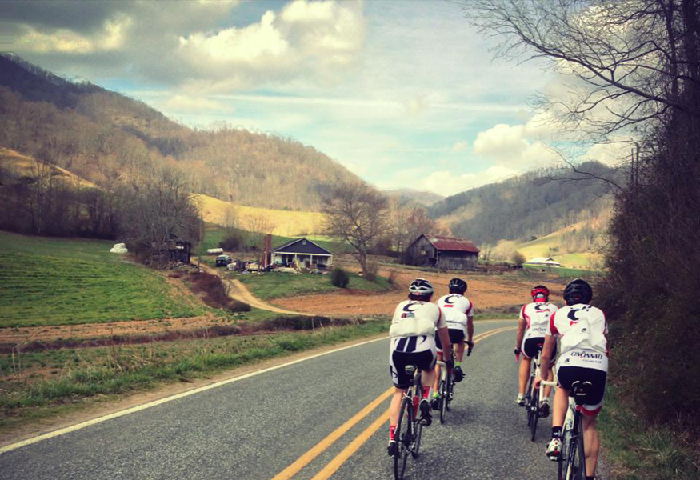
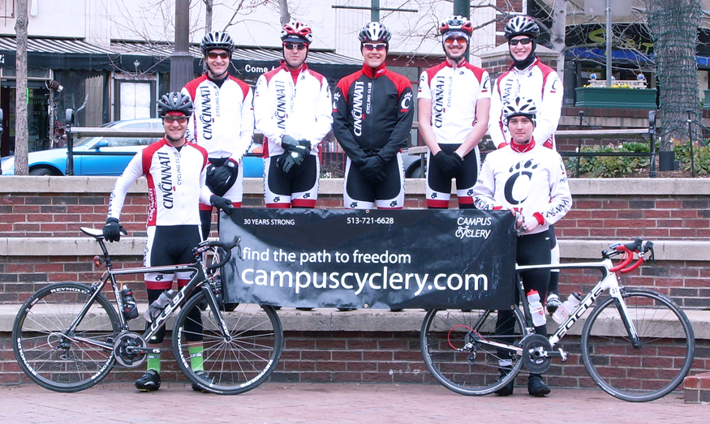

| Welcome to the official website of the University of Cincinnati Cycling Club. We are a nationally competitive club sport with a goal of introducing cycling to students and developing their cycling ability across all skill levels and areas of interest. We include road riders, mountain bikers, cyclocrossers, triatheletes, and time-trialists - anything with two wheels. |
| |
| ANNOUNCEMENTS |
|
| |
|
01.02.2014
Happy New Year! A few announcements:
Our new Vice President for the spring semester will be Kipp Silber, replacing Jake Henningsen who has left for an exciting co-op with Saris. Alos, the new Team Social Event Coordinator, Mallory Kaplan, will be working with the officers and team members to organize gatherings. Events that are fun and promote bonding between members are important. Feel free to contact us with ideas.
The team meeting will be in the new lab on January 14th 638 Rieveschl Hall at 7:00 PM. We'll be discussing the coaching expectations and introducing new coach Peter Wimberg. Everyone needs to be there. Enjoy the rest of your break and keep up the indoor training! The first road races will be here before you know it. |
 |
| ----------------------------------------------------------------------------------------------------------------------------- |
12.09.2013
The final race of 2013 was completed this past weekend in Granville, OH at the Cap City Cross Infirmary Mound. Also occuring in tandem was MWCCC Cyclocross Regionals. Snowy conditions made for a tough course that quickly turned to mud. Despite the sub-freezing temps, our own Paul Dentel podiumed in the Men's B race. Enjoy the holidays and see you in 2014! |
 |
| ----------------------------------------------------------------------------------------------------------------------------- |
10.20.2013
Fall means cyclocross is in full effect. Don't want to buy a cyclocross bike? That's fine! As Cyclocross Magazine puts it: "Use what you have: have a mountain bike? Road bike? Heck, even a hybrid will do! The beauty of cyclocross is that it’s made for a combination of bikes, so whatever you’ve got, the odds are good you can use it to get your feet wet before committing to a new bike." It's a great article for those interested in starting cyclocross: http://www.cxmagazine.com/. And when you are ready to pull the trigger on that new rig, head on over to Campus Cycerly for a great selection and top notch service. For more info contact us. See you in the mud! |
 |
| ----------------------------------------------------------------------------------------------------------------------------- |
09.06.2013
The UC cycling club is planning a camping trip for any new or returning members. We will be leaving around 3 pm on Saturday the 21st and riding roughly 30 miles to the campground. This is a NO DROP bike ride over to the campground at whatever speed is necessary to get everybody there at the same time. Feel free to ride whatever bike you have/want, we will have people on bikes ranging from road bikes, to fixed gear, to mountain bikes, this should be a fun ride where we get to know each other. The campground we will be staying at is Morgans Ft. Ancient Riverside Camping. You can go to the website at Morganscanoe.com for more info or contact us . Hope to see all of you at the camping trip for some awesome bonding time and great cycling fun! |
| ----------------------------------------------------------------------------------------------------------------------------- |
08.23.2013
Fall semester is around the corner so that means it's time for our Fall Meeting. Please plan to attend a meeting on August 29th at 7pm in Baldwin 648. We will be discussing general club items and setting our Fall ride schedule. For more info contact us. |
| ----------------------------------------------------------------------------------------------------------------------------- |
08.10.2013
David's race report from the Lionheart Grand Prix 3/4 race:
"For those of who have not raced this before, it is really more of a circuit race versus a crit. 1.6 mile loop around the P&G offices in Mason. Long downhill and a short uphill (4%ish) about 500 meters from the finish. Course was closed so at times we had about 2-4 lanes. The race was about 30 minutes long and had over 40 guys lined up. My plan was to try and get in a break halfway through the race. Even though the course was wide-open and not technical, the group was very skiddish and doing some shenanigans. About halfway through, 2 guys went off the front and had a little gap. I figured this was the best shot at a break and bridged up to them. Once I got there, both guys looked at me and promptly sat up with the main group still at least 10 seconds behind. At this point I decided to conserve my energy for the Cat 3 race and chilled out. I was 14th in the pack sprint in the end." [Photo by Jeffrey Jakucyk] |
 |
| ----------------------------------------------------------------------------------------------------------------------------- |
06.10.2013
It's summer and that means criterium racing! The end of the spring road race season saw the UCCC racking up some winning results, helping a number of our members to upgrade category. More reason for celebration was a non-race weekend trip to the Red River Gorge for a weekend full of bicycles. Be sure to check the calendar to come out and cheer on the UCCC at our next race! |
|  |
| ----------------------------------------------------------------------------------------------------------------------------- |
04.10.2013
A big thanks to our fantastic sponsor Campus Cyclery for all they do for us. Snapped a quick team picture here in Asheville, NC. We have been racking up some great results thus far this spring - check out our results page for all the updates and make sure you like us on Facebook. |
|  |
| ----------------------------------------------------------------------------------------------------------------------------- |
03.22.2013
Happy Spring Break! We enjoyed a fantastic training trip down to Asheville, NC for 5 days. Warm and sunny weather was greeted with smiles and lots of miles and climbing. We logged over 200 miles and 20,000 vertical feet riding some of the best roads and taking in the stunning scenery. Now if only Cincinnati weather would warm up too! Our new ride schedule is updated on the calendar and will be Monday, Wednesday, Friday at 6pm. See the calendar for more information. |
|  |
| ----------------------------------------------------------------------------------------------------------------------------- |
01.12.2013
Happy 2013 everyone! With spring just around the corner, our training has kicked into high gear. Join us for a trainer session every weekday evening at 6pm in 702 Rieveschl Hall, or contact us for more info. As soon as the weather warms up a bit, we'll move outdoors and take to the roads for rides around the Tri-State area. Take a look at our calendar for a schedule of upcoming races, meetings, and rides. See you on a bike! |
| ----------------------------------------------------------------------------------------------------------------------------- |
09.10.2012
Welcome back. Hope everyone had a great summer and is ready to ride! If you have been thinking of riding with us, the fall is as good a time as any. With the majority of road racing over for the season, rides become more about fun than serious training. As the days continue to get shorter please be sure to bring lights on all rides. Check our ride schedule calendar for times and locations. |
| ----------------------------------------------------------------------------------------------------------------------------- |
07.10.2012
Well it is certainly hot in Cincinnati this summer! We're making sure to stay hydrated and hope you are too. After a packed June that saw some great results for the University of Cincinnati Cycling Club, July offers a bit of time off to recharge the batteries before the last few races of the road season in the late summer/early fall. So if you have been thinking of riding with us this is a perfect time! Check our ride schedule calendar for times and locations. |
| ----------------------------------------------------------------------------------------------------------------------------- |
07.02.2012
This past weekend was one of Cincinnati's biggest for crit racing. With 5 races over 8 days, there's plenty of racing for all. The Hyde Park Blast on Sunday has quite the draw for the Pro/1/2 race being a USA Crits Series race, the big guns were in town to light up the summer night in search of glory. Jamie Anderson took the victory in Friday night's Cat 5 race of the Madeira Centennial Criterium on a course with 2 180-degree turns and railroad tracks to boot. Paul Dentel just missed the podium in the Cat 3 race and took 4th. |
| |